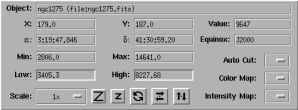
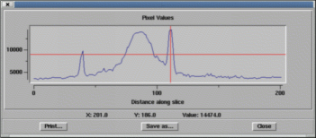
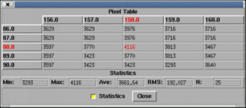

The simplest way to view your data values is by simply moving the cursor over the region of interest and then reading off the value shown in the control panel (in the "Value:" readout). Zooming and the zoom window helps you position your cursor accurately. Greater accuracy can be obtained by using the up and down arrow keys to move the cursor (this only works when the focus is on the main image, click on the main image if the arrow keys don't seem to work).

To view a slice through the image open the "View" menu and select the "Spectrum..." option. This allows you to draw a line on the canvas and then shows the image data values along the line. The line can then be moved and resized and the slice will be updated in real time. You move the line by placing the mouse cursor over it and pressing button 1 (this "selects" the line). If you hold the button down and move the mouse the line with move with the mouse. You can tell if the object is selected when little boxes, known as the selection grips, appear at its ends. If you drag one of the grips the end of the line will follow.

Open menu "View" and select the "Pixel Table..." option. This raises a sub-menu from which you should select a size. This size is the side of the box in which the image data values will be shown. Larger values will be slower to update.

This can be done using the "Histogram of XY region..." option in the "Image-Analysis" menu. Follow the link for more details.